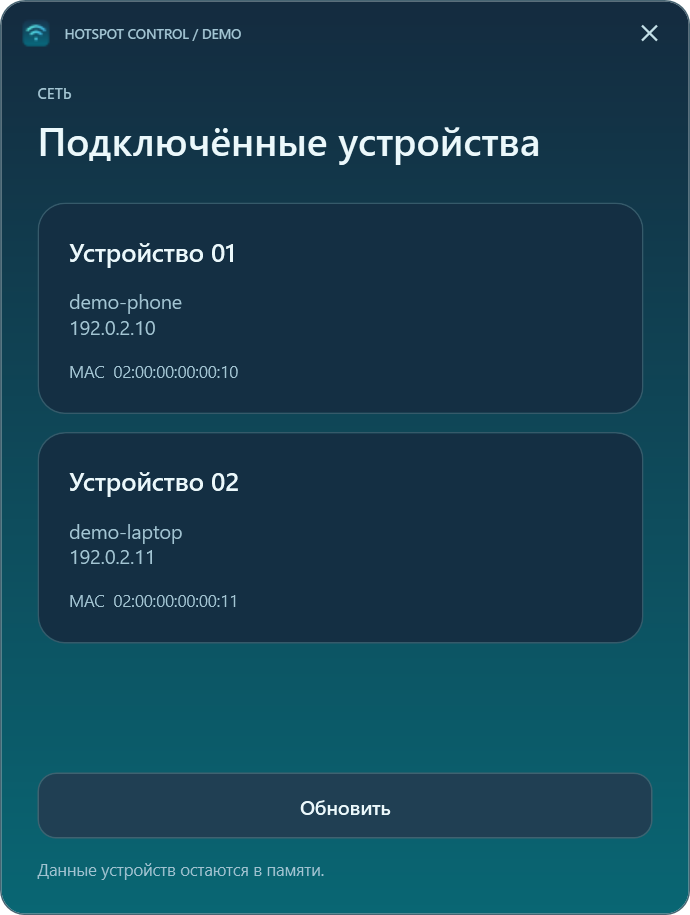
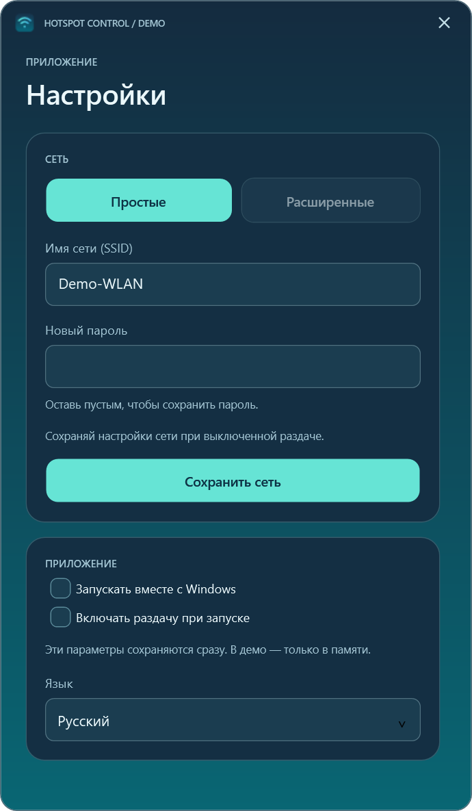
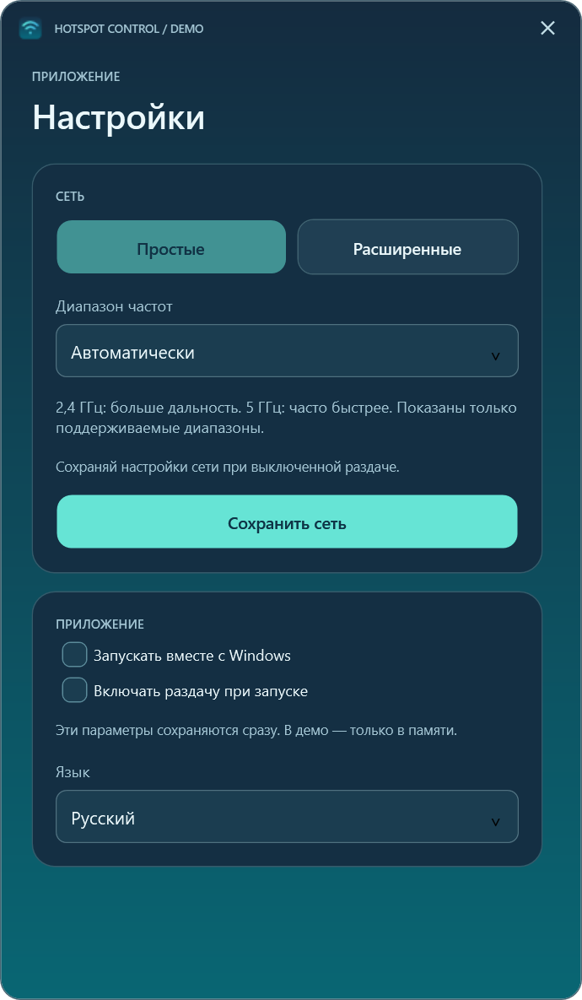
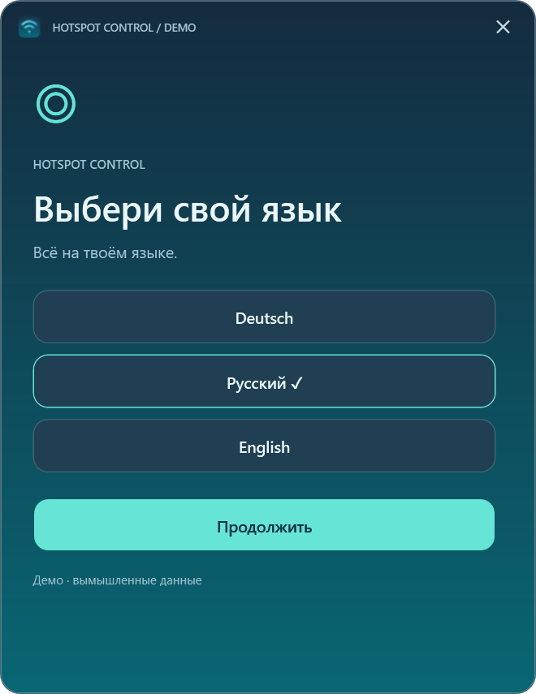
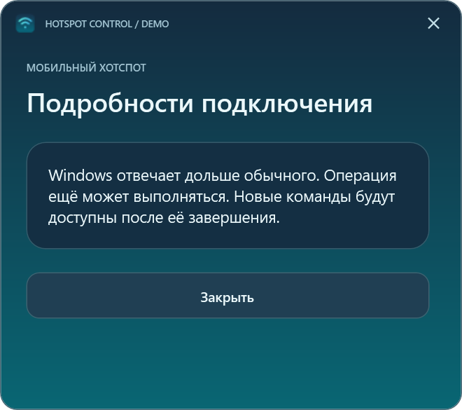

Руководство
Hotspot Control
Управляйте мобильной точкой доступа Windows, просматривайте подключённые устройства и настраивайте сеть и автозапуск.
Windows 11 24H2+ · x64 · Выпуск 0.3.0
Требования и ограничения: Совместимый Wi-Fi-адаптер; политики Windows или организации могут ограничивать операции. .NET входит в пакет.
Первые шаги: Проверьте SHA-256, распакуйте ZIP полностью и откройте HotspotControl.App.exe. Отдельная установка .NET не нужна.
Файлы приложения
Контрольные суммы: HotspotControl-0.3.0-win-x64.zip.sha256
Hotspot Control — компактное приложение для встроенной мобильной точки доступа Windows 11. Оно показывает состояние и подключённые устройства, управляет раздачей и предлагает настройки сети и автозапуска. Интерфейс, ошибки и трей доступны на немецком, русском и английском. Язык выбирается при первом запуске; последующая смена в настройках применяется после перезапуска.

Скриншоты
Эти рендеры WPF-превью используют вымышленные данные. Приложение показывает имена устройств так, как их передаёт Windows; примеры имён, адреса и отметка DEMO — это не поясняющие тексты интерфейса. Названия языков в окне выбора обозначают доступные варианты.
| Главное окно | Подключённые устройства |
|---|---|
 |
 |

| Простые настройки | Расширенные настройки |
|---|---|
 |
 |


| Выбор языка | Сообщение о тайм-ауте |
|---|---|
 |
 |


Загрузка и запуск
Скачайте HotspotControl-0.3.0-win-x64.zip из Releases, сравните SHA-256 с приложенным файлом .sha256 и полностью распакуйте архив. Запустите HotspotControl.App.exe из распакованной папки. Установка, права администратора и отдельная установка .NET не нужны. Целевая система: Windows 11 24H2 и новее, x64, с подходящим Wi-Fi-адаптером. Политики Windows или организации могут ограничивать функции. Практические испытания пока проводились только на компьютере автора.
Кнопка питания на нарисованном ноутбуке включает и выключает раздачу; выключение отключает клиентов. Устройства показывает данные, полученные от Windows. Настройки позволяют изменить имя сети, пароль, поддерживаемый диапазон, язык и автозапуск для текущего пользователя. Пустое поле нового пароля сохраняет прежний пароль. Для изменения параметров сети точка доступа должна быть выключена. Сворачивание скрывает окно в трее; щелчок по значку возвращает его. Закрытие завершает приложение, не меняя состояние точки доступа. Зелёные волны означают включённую раздачу; серые — выключенную или неизвестное состояние.
Автовключение при запуске необязательно. HotspotControl.App.exe --no-auto-start открывает приложение без него. После тайм-аута операция Windows всё ещё может завершиться: перед следующим действием проверьте состояние. Ограничение скорости отдельных устройств не поддерживается.
Конфиденциальность и сборка
Нет облака, телеметрии и локальных журналов с именами сетей или адресами устройств. Язык и настройка автовключения хранятся в %LOCALAPPDATA%\HotspotControl\preferences.json; ярлык запуска с Windows находится в папке автозагрузки пользователя. Приложение не сохраняет пароли. Удаляйте личные данные со скриншотов и из сообщений об ошибках. Изображение выше содержит вымышленные данные.
Для сборки нужен .NET 10 SDK на Windows: ./Run-Checks.ps1 и ./Publish.ps1. Другой SDK можно передать через -DotnetPath. Скрипт создаёт ZIP и SHA-256 локально в artifacts/ и ничего не загружает.
Исходный код не распространяется под открытой лицензией. Разрешено личное использование неизменённой бинарной версии. Архитектура · Релиз 0.3.0 · Превью · Изменения · Права · Сторонние компоненты.